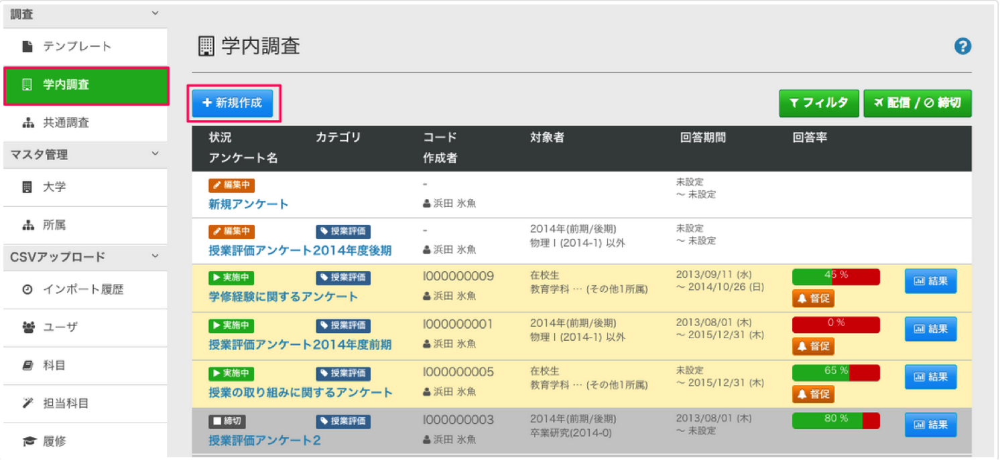
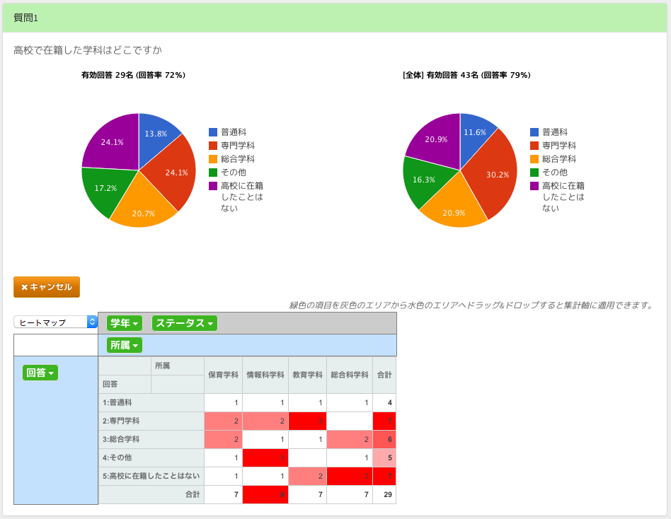
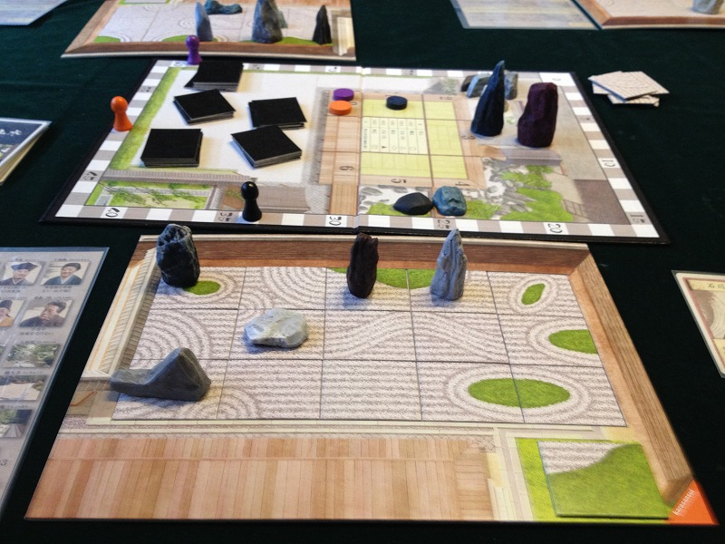
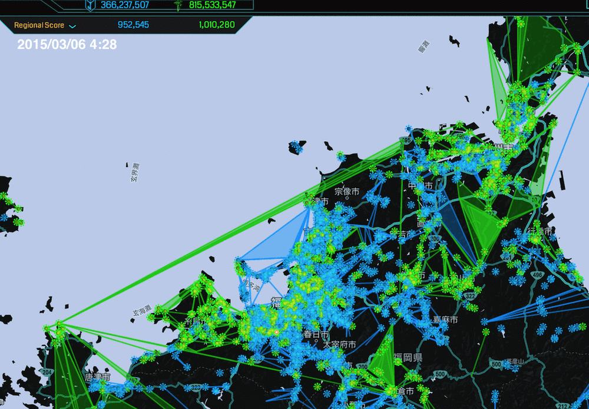
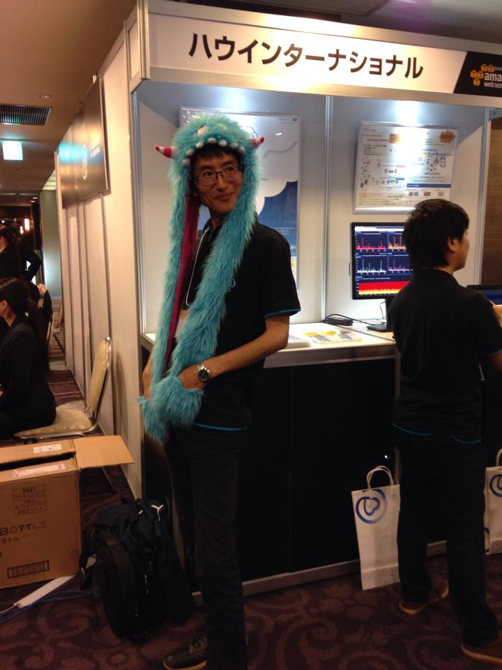

HAW が何をやっているか
わからない件
Presented by Shinpei Noda
自己紹介
野田 心平 (のだ しんぺい)
- 九州工業大学 情報工学部卒
-
株式会社ハウインターナショナル
- 2009 年 入社
- 学びと成長サポート事業部
- プログラマ
HAW について
HAW
学びと成長サポート事業部について
学びと成長サポート事業部
通称 : まなサポ部
学生の学びと成長のサポートを通じて、元気な若者を増やす
まなサポ
ediea (エディア) http://www.ediea.net/
学生の学びと成長を引出し「教育の質保証」を実現するための情報システム群
全国の大学・短期大学に展開中
製品例
E2Survey (ediea Educational Survey)
教育機関向けに特化したアンケートシステム
E2Survey
アンケート対象のユーザ (学生・教職員) の条件を細く設定
E2Survey
全体の結果との比較や対象者の条件による分析
開発について
まなサポにおける開発
We
発足以来 Ruby + Ruby on Rails 一筋
まなサポにおける開発


社内勉強会について
社内勉強会
週に 2 回、それぞれ 1 時間ずつ社内勉強会 (輪読会) を開催中
読んだ本 / 読んでいる本
- リファクタリング Ruby
- アジャイルサムライ
- Effective Ruby
- オブジェクト指向のこころ
- 実践ドメイン駆動設計 (読みたい)
社内勉強会
その他
博多オフィスの流行
ボードゲーム
巷で話題の枯山水
博多オフィスの流行
Ingress
Google 発のリアル陣取りゲーム
弊社エージェントがひとりで福岡県広域を沈めた様子
ありがとうございました
社内勉強会やボードゲームの参加、いつでも大歓迎です！
